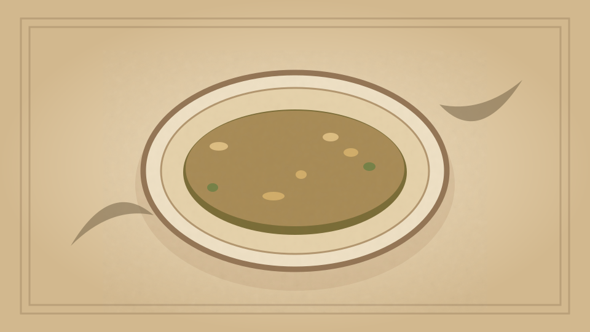

1910 · Fannie Merritt Farmer · SOUPS
White Soup Stock I
The Boston Cooking-School Cook Book

Historical Recipe
The following text is extracted from the 1910 edition, retaining historical terminology and quantities.
Original Ingredients & Directions
3 lbs. knuckle of veal
1 lb. lean beef
3 quarts boiling water
1 onion
6 slices carrot
1 large stalk celery
½ teaspoon peppercorns
½ bay leaf
2 sprigs thyme
2 cloves
French Chef
Wipe veal, remove from bone, and cut in small pieces; cut beef in pieces, put bone and meat in soup kettle, cover with cold water, and bring quickly to boiling-point; drain, throw away the water. Wash thoroughly bones and meat in cold water; return to kettle, add vegetables, seasonings, and three quarts boiling water. Boil three or four hours; the stock should be reduced one half.
Automatically extracted transcription; editorial verification pending. Historical instructions may not meet modern food-safety standards.